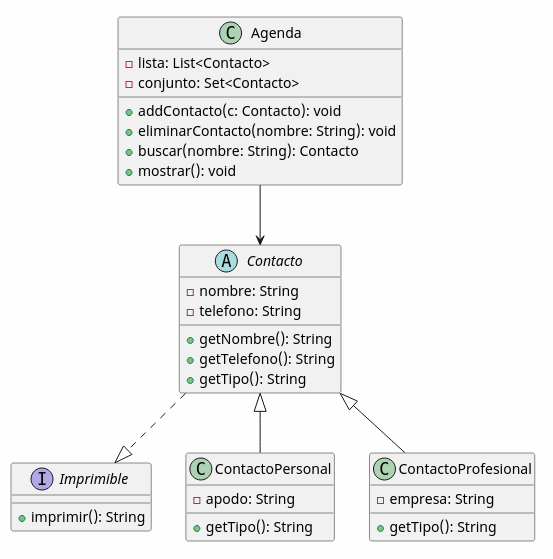

Boletín de Ejercicios – Colecciones en Java
Actividad 1 📋 List básica de números List
Crea una lista de números enteros:
- Añade 10 números introducidos por teclado
- Muestra todos los valores
- Calcula suma y media
Pista 🔍
Usa ArrayList<Integer> y un bucle for.
Actividad 2 🔁 Eliminar duplicados Set
Dada una lista con números repetidos:
- Introduce valores manualmente
- Elimina duplicados usando un
Set - Muestra resultado final
Pista 🔍
Convierte List → HashSet y luego vuelve a ArrayList.
Actividad 3 👥 Lista de alumnos List + objetos
Crea clase Alumno (nombre, nota).
- Guarda alumnos en una lista
- Muestra aprobados
- Calcula media general
Pista 🔍
Recorre con for (Alumno a : lista).
Actividad 4 🗂️ Diccionario simple Map
Crea un traductor básico español-inglés:
- Usa
HashMap - Inserta 10 palabras
- Permite buscar traducción
Pista 🔍
map.get(clave) devuelve el valor o null si no existe.
Actividad 5 🔎 Contar frecuencias Map avanzado
Dada una frase o un fichero de texto:
- Cuenta cuántas veces aparece cada palabra
- Guarda el resultado en un
Map<String, Integer> - Muestra las palabras ordenadas por número de apariciones
Pista 🔍
- Usa un
Mappara almacenar palabra → frecuencia - Si la palabra ya existe: incrementa su valor
- Si no existe: añádela con valor 1
- Puedes usar
map.containsKey()omap.getOrDefault()
Pista 📄 Lectura de fichero
- Usa
BufferedReaderpara leer el fichero línea a línea - Ejemplo:
BufferedReader br = new BufferedReader(new FileReader("texto.txt")); String linea; while((linea = br.readLine()) != null){ // procesar línea } br.close(); - Divide cada línea en palabras con:
String[] palabras = linea.split("\\s+");
Pista 📊 Ordenar por frecuencia
- Convierte el
Mapen una lista:List<Map.Entry<String,Integer>> lista = new ArrayList<>(map.entrySet()); - Ordena con
Comparator:lista.sort((a, b) -> b.getValue() - a.getValue()); - Recorre la lista ordenada para mostrar resultados
Pista PRO 🧠
- Convierte todo a minúsculas (
toLowerCase()) - Elimina signos de puntuación (
replaceAll()) - Muestra el top 5 de palabras más repetidas
Actividad 6 🚶 Recorrido con Iterator Iterator
Crea una lista de números:
- Elimina los pares mientras recorres la lista
- Usa Iterator correctamente
Pista 🔍
No uses for, usa Iterator.remove().
Actividad 7 🧑🏫 Lista de alumnos ordenada Collections.sort
Ordena alumnos por nota:
- Crea lista de objetos
- Ordena por nota ascendente
Pista 🔍
Usa Comparator.comparing(Alumno::getNota).
Actividad 8 🛒 Carrito de compra List + lógica
Simula un carrito:
- Productos con nombre y precio
- Lista de productos
- Total de compra
Pista 🔍
Recorre la lista sumando precios.
Actividad 9 🧾 Map de inventario Map
Simula inventario de tienda:
- Producto → Stock
- Añadir productos
- Actualizar stock
Pista 🔍
map.put(producto, stock) actualiza o inserta.
Actividad 10 🔄 Fusión de listas List
Tienes dos listas de números:
- Une ambas listas
- Elimina duplicados
- Ordena resultado
Pista 🔍
Usa addAll() + TreeSet.
Actividad 11 🧠 Búsqueda en Map Map + Iterator
Busca claves que contengan una subcadena:
- Ej: “pe” → Pedro, Pepe
Pista 🔍
Itera con entrySet().
Actividad 12 🧪 Entrega obligatoria: Agenda avanzada Herencia + List + Set + Interfaces + Ficheros
📌 Tipo: Práctica evaluable
📌 Objetivo: Aplicar herencia, clases abstractas, colecciones, interfaces, ordenación y persistencia.
🧩 Modelo orientado a objetos

Se debe diseñar una jerarquía de clases:
- Clase abstracta:
Contacto- atributos comunes:
nombre,telefono - método abstracto:
String getTipo()
- atributos comunes:
- Clases hijas:
ContactoPersonal(añade atributo:apodo)ContactoProfesional(añade atributo:empresa)
🔌 Interfaces (OBLIGATORIO)
Imprimible→String imprimir()
Todas las clases de contacto deben implementar esta interfaz.
📚 Colecciones (OBLIGATORIO)
List<Contacto>→ colección principalSet<Contacto>→ control de duplicados
Se almacenarán objetos de ambos tipos (ContactoPersonal y ContactoProfesional).
🎯 Funcionalidades
- ➕ Añadir contacto (indicando tipo)
- 🔎 Buscar contacto por nombre
- 🗑️ Eliminar contacto (usar
Iterator) - 📋 Mostrar todos los contactos (usando polimorfismo)
📊 Ordenación (OBLIGATORIO)
- Comparable → ordenar por nombre
- Comparator → ordenar por teléfono o tipo de contacto
💾 Persistencia (OBLIGATORIO)
- Guardar y cargar contactos desde fichero
- Elegir entre:
- Texto
- Binario (Serializable)
📦 Entrega
- Proyecto Java completo
- Uso correcto de herencia y polimorfismo
- README explicando decisiones de diseño
Actividad 13 🧠 Top N elementos List + ordenación
Dada una lista de números enteros:
- Ordena la lista de mayor a menor
- Muestra los 5 valores más altos
Pista 🔍
Usa Collections.sort(lista, Collections.reverseOrder()).
Actividad 14 🔁 Eliminación segura con Iterator Iterator avanzado
Dada una lista de palabras:
- Elimina todas las palabras que tengan menos de 4 caracteres
- Hazlo usando
Iterator
Pista 🔍
Usa iterator.remove() dentro de un while.
Actividad 15 🗂️ Map de notas por asignatura Map anidado
Crea un sistema de notas:
- Asignatura → (Alumno → Nota)
- Usa
Map<String, Map<String, Double>> - Muestra todas las notas por asignatura
Pista 🔍
Recorre con entrySet() doblemente anidado.
Actividad 16 📊 Ranking de alumnos List + Comparator
Crea una lista de alumnos:
- Nombre y nota final
- Ordena de mayor a menor nota
- Muestra ranking tipo clasificación
Pista 🔍
Usa Comparator.comparing(Alumno::getNota).reversed().
Actividad 17 🛒 Inventario inteligente Map + lógica
Simula un inventario:
- Producto → stock
- Si stock llega a 0, eliminar producto
- Mostrar solo productos disponibles
Pista 🔍
Usa iterator sobre entrySet().
Actividad 18 🔍 Búsqueda múltiple Map avanzado
Dado un Map de contactos:
- Busca todos los nombres que contengan una letra o subcadena
- Devuelve lista de coincidencias
Pista 🔍
Recorre entrySet() y usa contains().
Actividad 19 🔄 Eliminación por condición List + Iterator
Dada una lista de productos:
- Elimina los productos cuyo precio sea menor a 10€
- Hazlo de forma segura
Pista 🔍
No uses for-each. Usa Iterator.remove().
Actividad 20 🚀 Proyecto final: Gestor completo de colecciones todo integrado
Implementa un sistema que combine todo lo aprendido:
- Lista de alumnos (List)
- Notas por alumno (Map)
- Eliminación de duplicados (Set)
- Recorridos con Iterator
Debe permitir:
- Agregar alumnos
- Asignar notas
- Mostrar ranking
- Eliminar alumnos con media baja
Pista 🔍
Divide el problema en estructuras: List + Map + Set y coordínalas desde un menú.